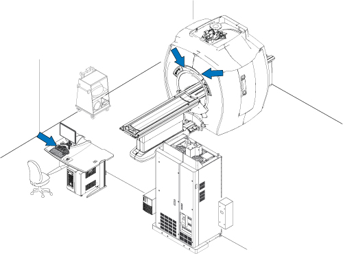
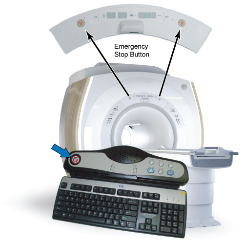
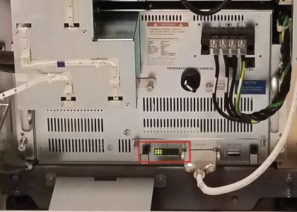
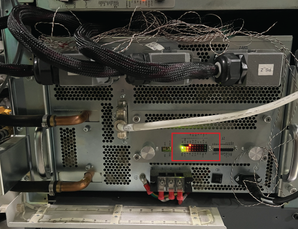
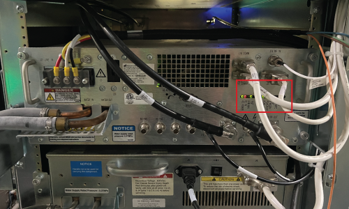
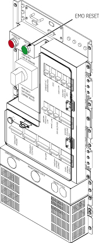

- 00000018WIA30AA4F20GYZ
- id_131062692.3
- Aug 24, 2022 11:49:06 PM
Checking emergency stop and off functions
Overview
The document provides the procedure for checking:
- The EMERGENCY STOP controls the Power Distribution Unit (PDU) for the Gradient power supply, RF amplifier, PHPS(including patient table), BRM blower, patient blower and the DC power breaker on the PDU.
- The EMERGENCY OFF function of the power for the entire system (except MRU, Magnet Monitor, MRE, and pneumatic patient alert).
The PDU EMERGENCY STOP buttons are located on the SCIM Keyboard and on the Magnet Enclosure front cover (two buttons, left and right).
An EMERGENCY OFF button is located on the System Main Disconnect Panel. The other EMERGENCY OFF buttons are located by the customer.

System Shutdown
Shut down the LINUX PC by going to the Service Desktop, clicking on System Shutdown, and confirming the operation.
Emergency Stop

-
Press one of the EMERGENCY STOP buttons as shown in Figure 2.
- Verify the power to the Gradient subsystem and RF subsystem is shut off by checking that the cabinet cooling fans have stopped. Also, verify that the Display LEDs on the Magnet Enclosure are not illuminated.
- Verify Gradient is shut off. (LEDs are off)
Figure 3. XFD-PS LEDs 
Figure 4. New XFD-PS (PN:5549353) LEDs 
- Verify RF amplifier is shut off. (LEDs are off)
Figure 5. RF amplifier LEDs 
Note:Activation of the Emergency Stop Button for System Cabinet will remove the high voltage power from the gradient driver, so there will be no gradient power output to the body coil. However, be aware that the low voltage power will stay enabled in the System cabinet after the Emergency Stop Button is pressed. This low voltage power remains on so the System will be ready for scanning when full power is restored.
- Verify Gradient is shut off. (LEDs are off)
-
On the PDU, press the EMO Reset button to return power to all effected cabinets. See Figure 6 for System Cabinet.
-
Repeat steps 1 through 3 for each of the other EMERGENCY STOP buttons.

Emergency Off
The AC power for the Magnet Monitor，MRU, MRE and pneumatic patient alert are not controlled by the Emergency Off button.
- Power off VRE, shut down system and turn GOC and Gradient Control Breaker off. refer to LOTO for GOC.
- Press one of the EMERGENCY OFF buttons (the location of buttons is determined by the customer). Verify that power was removed from the PDU by checking the input voltage test points or viewing the PDU power indicator lights.
- Twist E-off button to release it.
- On the System Main Disconnect Panel, confirm that Main Disconnect or Main Input Breaker is turned to ON position. Press System ON/ Power ON button; Or, turn System On/Off switcher to ON position. The rest of the system should automatically power on.
- On the PDU, press the EMO RESET button.
- Repeat steps 2-5 for the other EMERGENCY OFF buttons.
- On the PDU, turn GOC and Gradient Control breaker to on position (refer to remove LOTO for GOC); press EMO Reset and confirm that host PC boots up properly.